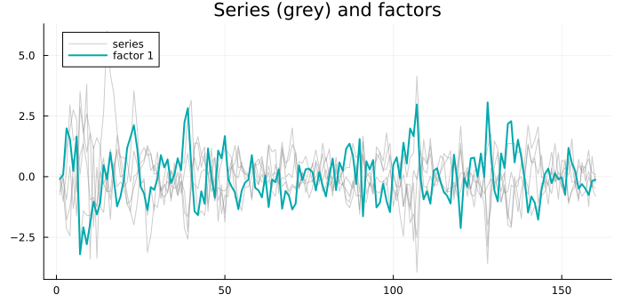
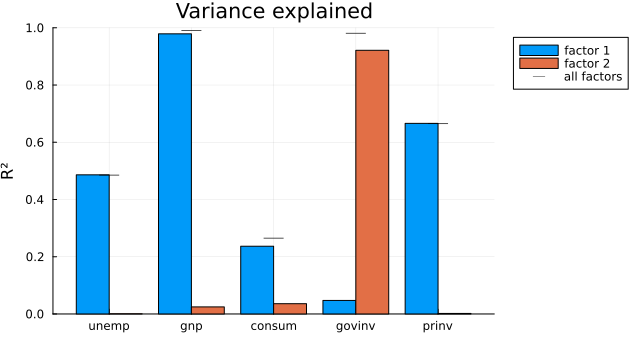
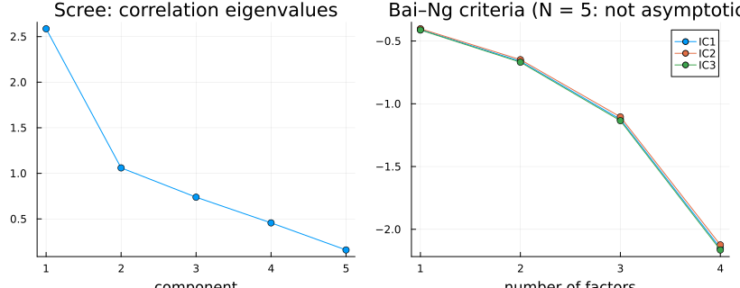
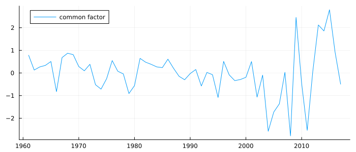

Dynamic Factor Models
When many series rise and fall together, a dynamic factor model explains them with a few unobserved common factors that follow their own VAR, plus a part peculiar to each series:
\[y_t = \Lambda f_t + \varepsilon_t, \qquad f_t = A_1 f_{t-1} + \dots + A_p f_{t-p} + \eta_t, \qquad \eta_t \sim N(0, I),\ \varepsilon_t \sim N(0, H),\ H \text{ diagonal}\]
y_t holds N series, f_t holds r < N factors, the loadings Λ say how strongly each series moves with each factor, and the diagonal H says the idiosyncratic parts are unrelated across series — everything the series share goes through the factors.
Hamilton (1994, §13.1, printed p. 376, PDF 391) writes this model down, as Stock & Watson's (1991) index of coincident indicators, as an example of a state-space form; it is estimated by maximum likelihood on the Kalman filter. The factor-model chapter of Tsay (2010, Ch. 9) is a different thing: its factors are static and serially uncorrelated, as he states (printed p. 469, PDF 496), so it is the cross-sectional model, not this one.
Λ, A, H here are the observation loadings, the factor VAR and the idiosyncratic covariance. In the state-space form of API: State Space they become Z, T and H, with the factor innovation variance Q = I.
Fitting one factor
Five quarterly US series from econ5 — the change in unemployment and the growth of GNP, consumption, government and private investment — standardised first, because the likelihood is not scale-invariant and fit_dfm does not standardise for you:
using TSAnalytics, Plots
using Statistics: cor
e = dataset("econ5")
g(x) = 100 .* diff(log.(x))
Z = standardize(hcat(diff(e.unemp), g(e.gnp), g(e.consum), g(e.govinv), g(e.prinv)))
Y = (unemp = Z[:, 1], gnp = Z[:, 2], consum = Z[:, 3], govinv = Z[:, 4], prinv = Z[:, 5])
m1 = fit_dfm(Y, 1)Dynamic factor model: 5 series, 1 factor, factor VAR(1), n = 160
identification: Q = I, leading loadings block lower-triangular with positive diagonal
log-likelihood = -977.6635 AIC = 1977.3271 BIC = 2011.154 parameters = 11
optimiser convergedA NamedTuple of columns carries the series names through. The loadings and the share of each series the factor explains:
for (nm, l, r2) in zip(m1.names, m1.Lambda[:, 1], series_r2(m1))
println(rpad(nm, 7), " loading ", lpad(round(l, digits = 3), 7), " R² ", round(r2, digits = 3))
endunemp loading 0.616 R² 0.477
gnp loading -0.888 R² 0.992
consum loading -0.447 R² 0.251
govinv loading 0.101 R² 0.013
prinv loading -0.722 R² 0.656plot(factor_paths(m1); overlay_series = true, size = (700, 340))
The factor rises with unemployment and falls with output: it is a business-cycle index, explaining nearly all of GNP growth, two thirds of private investment and almost none of government investment, which follows its own budget-driven path.
Identification: why the answer is unique
The loadings are identified only up to a rotation: Λ f_t = (Λ G)(G′ f_t) for any orthogonal G, with the same likelihood. fit_dfm fixes Q = I and makes the leading r × r block of Λ lower-triangular with a positive diagonal, so every run returns the same fit. The price is that the order of the series matters — the first series' loading on the first factor is the positive one, which is why this factor counts unemployment as positive. Any other rotation is one call away, and leaves the likelihood unchanged:
m2 = fit_dfm(Y, 2)
G = [cos(0.6) -sin(0.6); sin(0.6) cos(0.6)]
println("two factors, log-likelihood: ", round(m2.loglik, digits = 6), " rotated: ",
round(rotate_factors(m2, G).loglik, digits = 6))
println("gain over one factor: ", round(m2.loglik - m1.loglik, digits = 1))two factors, log-likelihood: -931.475308 rotated: -931.475308
gain over one factor: 46.2How many factors?
A second factor raises the likelihood by 46 — and the per-factor R² shows where it went:
plot(factor_r2_plot(m2); size = (640, 340))
The second factor explains government investment and nothing else. A factor that one series loads on is not common; it is that series' idiosyncratic part relabelled, and the one-factor model is the honest description. The Bai–Ng criteria, computed from principal components, are the usual formal guide:
plot(factor_selection_plot(Z, 4); size = (820, 320))
They keep falling all the way to four factors of five series, and the plot says why that is not an answer: the criteria are consistent as both the number of series and the number of periods grow, and five series is nowhere near that. With few series, read the loadings.
Missing values and forecasts
Missing observations are NaNs, skipped by the filter one series at a time; the factor is estimated from whatever is observed in each period:
Zm = copy(Z); Zm[50:60, 4] .= NaN # eleven quarters of govinv lost
Ym = (unemp = Zm[:, 1], gnp = Zm[:, 2], consum = Zm[:, 3], govinv = Zm[:, 4], prinv = Zm[:, 5])
mm = fit_dfm(Ym, 1)
println("correlation of the two factor paths: ", round(cor(mm.factors[:, 1], m1.factors[:, 1]), digits = 6))correlation of the two factor paths: 0.999998forecast projects the factor VAR forward and maps it back through the loadings, returning a VARForecast for all N series at once, which plots like any other.
India: a trade factor, not a business cycle
India's annual GDP growth, CPI inflation, and the changes in its imports and exports as shares of GDP, 1961–2017, from global_economy:
ge = dataset("global_economy")
i = findall(==("India"), ge.Country)
years = ge.Year[i][2:end]
Zi = standardize(hcat(ge.Growth[i][2:end], 100 .* diff(log.(ge.CPI[i])),
diff(ge.Imports[i]), diff(ge.Exports[i])))
Yi = (growth = Zi[:, 1], inflation = Zi[:, 2], imports = Zi[:, 3], exports = Zi[:, 4])
mi = fit_dfm(Yi, 1)
for (nm, l, h, r2) in zip(mi.names, mi.Lambda[:, 1], mi.H, series_r2(mi))
println(rpad(nm, 10), " loading ", lpad(round(l, digits = 3), 7), " idiosyncratic var ",
lpad(round(h, digits = 3), 6), " R² ", round(r2, digits = 3))
endgrowth loading 0.038 idiosyncratic var 0.981 R² 0.002
inflation loading -0.067 idiosyncratic var 0.978 R² 0.005
imports loading -0.968 idiosyncratic var 0.0 R² 1.0
exports loading -0.777 idiosyncratic var 0.35 R² 0.644fi = mi.factors[:, 1]
println("factor lowest in ", Int(years[argmin(fi)]), ", highest in ", Int(years[argmax(fi)]))factor lowest in 2008, highest in 2015plot(Int.(years), fi; ribbon = 1.96 .* mi.factors_se[:, 1], label = "common factor",
size = (700, 300), legend = :topleft)
There is one common factor, and it is not the business cycle: growth and inflation do not load on it at all. It is India's trade: imports and exports rise and fall together as shares of the economy, and the factor is lowest in 2008, when the oil bill peaked, and highest in 2015, after the oil price collapsed. The imports share's idiosyncratic variance is at zero — the factor is the imports series, rescaled — a boundary case (a Heywood case, in factor-analysis terms) that fit_dfm reports as it is rather than nudging away from. The finding a factor model offers is sometimes that the expected common movement is not there.
See also
- API: Dynamic Factor Models
- Vector Autoregression — the factor VAR is an ordinary VAR in unobserved series
- Coming from R or Python —
dfmsandDynamicFactor, and why their loadings differ by a rotation